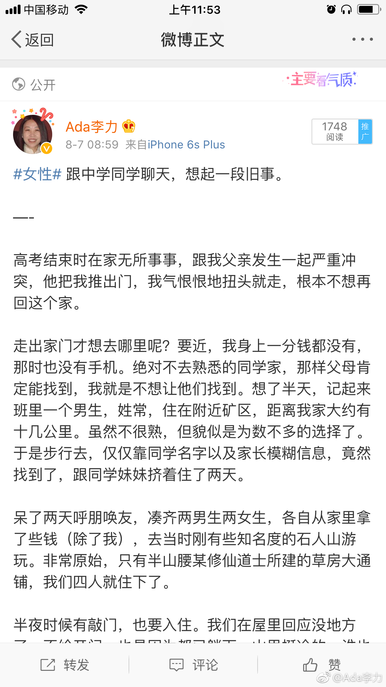
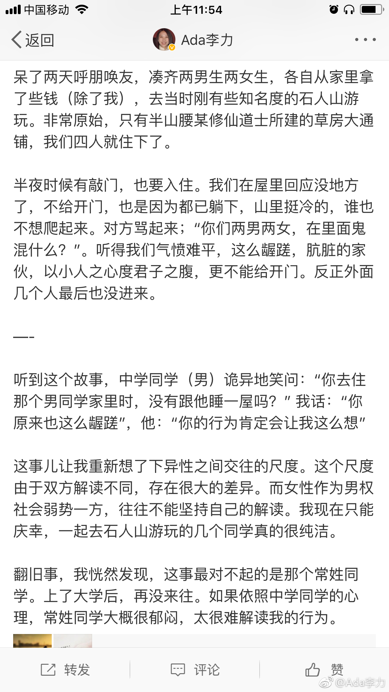

妇产科医师能提供更多这样血淋淋的例子。//@wfg西游:是的，年年出生时遇到一个宫外孕大出血来医院的女生，才20岁不到。妈妈在手术室外抹眼泪边说管不住非要和男同学出去玩。
@Ada李力:
#女性#因为一件旧事，忽然想聊聊对性爱的看法。这四十多年，我的观念经历了几次转变。
作为70后，以及家庭教育，我上学期间，一直认为婚前是不能有性行为的。
大学毕业后谈的男朋友是中学校友，记得我有次要去男朋友家，并且要在他家住几日的时候，一向很少干涉我的妈妈忽然很郑重地命令我：“不许上床”。我觉得她真是多虑，结婚前都不会发生这种事情的。实际上，母亲从来不会多虑，而是我太天真。
我大概是国内上互联网较早的一批人，98年就注册了hotmail邮箱(前身是RocketMail），加上当时国内逐渐开放的思维，也觉得自己性观念过于保守，这本来是两方都可以获得欢愉的活动，不能认为性就是是男性占便宜而女性吃亏。男女在性上是平等的……
我现在做了母亲，发现以前自认为开放的性观念，其实很SB。在中国社会和现状下，性对男女来说，根本不会平等。最重要的一点就是：性带来最大的后果，就是生育。而这个后果，绝大部份是由女性承担的，男性不得不承担的，也是由于社会或道德的压力。即使没有生育，避孕做得不好，打胎伤害的也是女性的身体。碰上个人渣的话，女性会被迫承担独自抚养后代的责任。即使在美国，单亲母亲的贫困率也很高。
所以，不顾及社会现状以及具体个案，而高呼性爱自由的，如果这人是男的，通常是坏心肠，如果是女的也这么喊，那就是真蠢真SB。
作为70后，以及家庭教育，我上学期间，一直认为婚前是不能有性行为的。
大学毕业后谈的男朋友是中学校友，记得我有次要去男朋友家，并且要在他家住几日的时候，一向很少干涉我的妈妈忽然很郑重地命令我：“不许上床”。我觉得她真是多虑，结婚前都不会发生这种事情的。实际上，母亲从来不会多虑，而是我太天真。
我大概是国内上互联网较早的一批人，98年就注册了hotmail邮箱(前身是RocketMail），加上当时国内逐渐开放的思维，也觉得自己性观念过于保守，这本来是两方都可以获得欢愉的活动，不能认为性就是是男性占便宜而女性吃亏。男女在性上是平等的……
我现在做了母亲，发现以前自认为开放的性观念，其实很SB。在中国社会和现状下，性对男女来说，根本不会平等。最重要的一点就是：性带来最大的后果，就是生育。而这个后果，绝大部份是由女性承担的，男性不得不承担的，也是由于社会或道德的压力。即使没有生育，避孕做得不好，打胎伤害的也是女性的身体。碰上个人渣的话，女性会被迫承担独自抚养后代的责任。即使在美国，单亲母亲的贫困率也很高。
所以，不顾及社会现状以及具体个案，而高呼性爱自由的，如果这人是男的，通常是坏心肠，如果是女的也这么喊，那就是真蠢真SB。
- 
- 